OBSOLETE v1 GUIDE — superseded by docs/ASSEMBLY.md for the v2 design. Do not build from this page.
This assembly guide is superseded
It describes the v1 machine (gravity hopper, swing arm, sort-gate levers, single regulator). The machine was redesigned in Nov 2026 (v2):
motor-raised hopper (28BYJ-48 + T8 lead screw)
single-servo parallelogram suction arm (ch0)
60 mm riser with round O-ring belts and a camera-centred stop
cradle shuttle on the load cell (ch1 tilt, ch2 carriage) into a 2-floor tray and a reject bin
12 V 5 A supply with three fixed 5 V regulators
Build from docs/ASSEMBLY.md, BOM.md and wiring_diagram.svg. Nothing on this page applies to v2: parts, steps, wiring, commands and calibration have all changed.
Stage 0
Parts Checklist
Gather everything before you begin. Click each item to mark it as collected.
⚠️ Items NOT Included in Original Order — Order Before Starting
12V DC power supply rated ≥ 3A — Guide requires ≥3A; 2A adapter ordered may be undersized for servos + motor load
Soldering iron and solder — Required for barrel jack wires, load cell terminals, and heat-set inserts
Multimeter — Safety-critical: required to dial in LM2596 output to 5.10–5.20 V before connecting any load
22 AWG stranded wire, red and black — Power runs (barrel jack, 5V rail, GND bus)
Breadboard positive rail or terminal block — For 5V and GND bus distribution
Heat-shrink tubing assortment — For insulating power wire joints
Conveyor belt or timing belt — Threaded over motor pulleys and idler rollers (Stage 6 Step 3)
MDF or acrylic backing board — Baseplate tiles fasten to this from below (Stage 6 Step 1)
M2.5 standoffs — For mounting all electronics to tray (Stage 6 Step 2)
M2 × 8mm screws — Shoulder servo securing screws in arm base (Stage 6 Step 5)
bin_body.stl × 8–16 · Standard · Batch on build plate
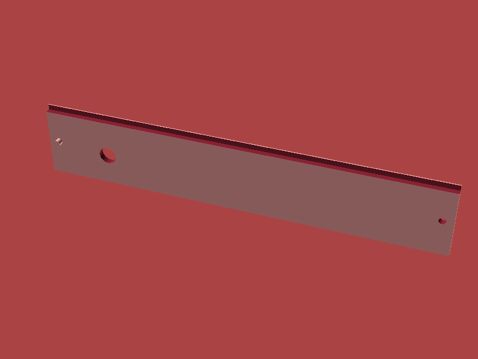
Print #3
Conveyor Rails
conveyor_rail_left/right.stl · 40% infill, 0.15mm layers — must be dimensionally accurate
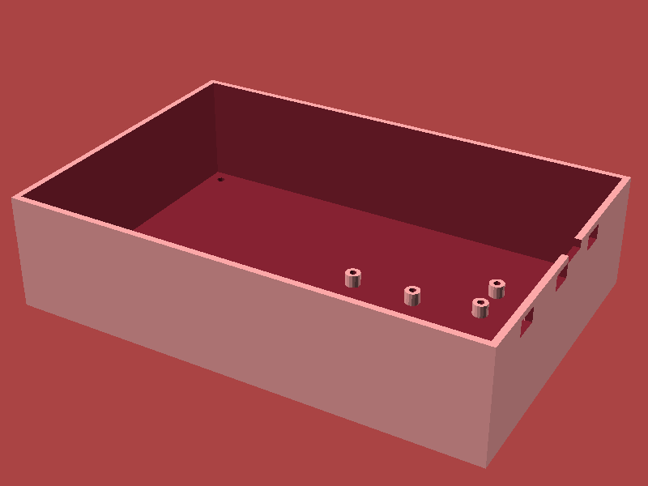
Print #4
Electronics Tray
electronics_tray.stl × 1 · Needed before electronics work begins
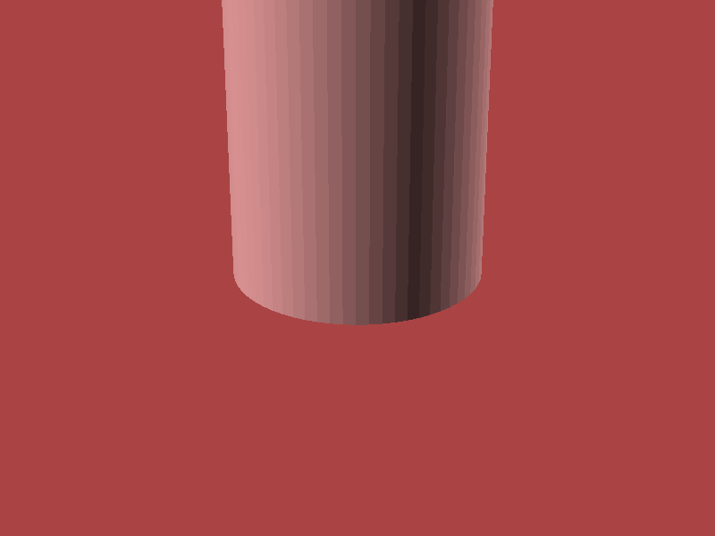
Print #5
Motor Mount
motor_mount.stl × 1 · 40% infill · Pair with rails
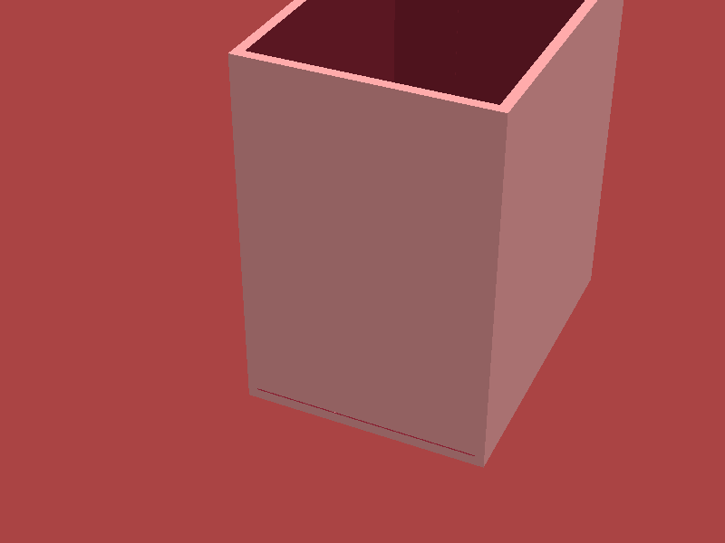
Print #6
Hopper Body + Gate
hopper_body.stl + hopper_gate.stl · Standard settings
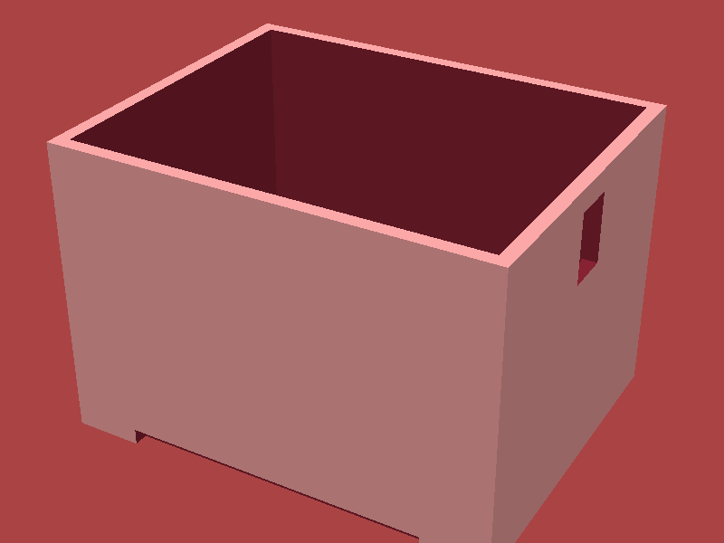
Print #7
Scanner Hood
scanner_hood.stl · Black filament — eliminates reflections · Print before camera work
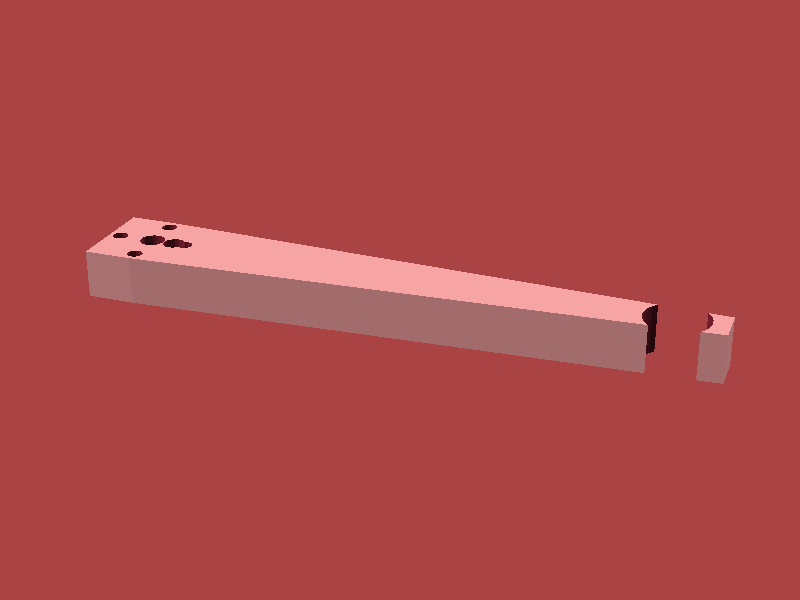
Print #8
Suction Arm
base/elbow/wrist.stl · PETG recommended · Base 40% infill · Confirm servo dimensions first
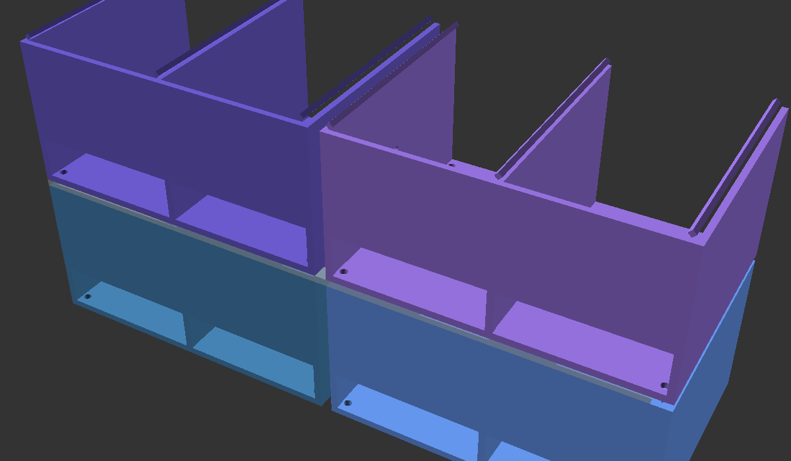
Print #9
Camera Bracket
camera_bracket.stl · Small, quick · Print while arm is printing
⚠️
Insert heat-set inserts into baseplate tiles and arm base while the parts are still warm from the printer using a soldering iron at 200°C. Much easier than fighting them in cold plastic later.
⚠️
Additional item needed: Soldering iron (and solder) — not included in original order. Required here for heat-set inserts, and again in Stage 2 for barrel jack wires and load cell terminals.
Stage 2
Power Wiring
12V DC in → LM2596 buck converter → 5V regulated rail. Build the power tree before connecting any logic.
⚡
Safety first. Keep the 12V adapter unplugged throughout all wiring steps. Only plug in after completing a stage and double-checking all connections.
⚠️
Additional item needed: 12V DC power supply rated ≥ 3A — not included in original order. The ordered 12V 2A adapter may be undersized: the guide requires ≥3A for the combined load of Pi, PCA9685, three MG996R servos, vacuum pump, and L9110S motor driver. Order a 12V 3A+ adapter before powering up under full load.
Step 1 — Barrel jack wires. Solder 22 AWG red wire to the barrel jack center pin (12V+) and black wire to the sleeve (GND). Sleeve-to-center confirmation: insert a 12V adapter and measure with multimeter — center should be positive.
⚠️
Additional items needed: 22 AWG stranded wire (red and black) and soldering iron + solder — not included in original order. Required for this step to wire the barrel jack and all subsequent power runs.
Step 2 — LM2596 input. Connect 12V+ to LM2596 IN+ and GND to IN–. Do not connect any load yet.
Step 3 — Set output voltage FIRST. Plug in 12V adapter. Measure LM2596 OUT+ / OUT– with multimeter while turning the trim pot. Dial in 5.10–5.20 V. Unplug before continuing.
⚠️
Additional item needed: Multimeter — not included in original order. This step is safety-critical: without a multimeter you cannot safely dial in the LM2596 output voltage before connecting the Pi and other logic.
Step 4 — 5V rail. Run 22 AWG red wire from LM2596 OUT+ to a breadboard positive rail (or terminal block). This is your 5V rail. Connect LM2596 OUT– to the GND bus.
⚠️
Additional item needed: Breadboard positive rail or terminal block — not included in original order. Required to distribute the 5V and GND bus to multiple modules. A shared GND bus (Step 6) also depends on this.
⚠️
Additional item needed: Heat-shrink tubing assortment — not included in original order. Use on all soldered power wire joints to insulate and protect connections.
Step 5 — 12V rail. Tap the barrel jack 12V+ for a separate 12V rail (or use a wye connector). This feeds the vacuum pump and L9110S motor driver. Keep these wires twisted and away from signal lines.
Step 6 — Common GND. Run GND wires from the breadboard GND rail to every module's GND pin. A shared GND bus is critical — floating grounds cause erratic behavior.
Step 7 — Label wires now. Use red tape for 12V+, red with stripe for 5V, black for GND. You'll thank yourself during debugging at 2 AM.
Stage 3
Pi + I²C Setup
Connect PCA9685 (servo driver) and HX711 (load cell) to the Pi Zero 2W GPIO header.
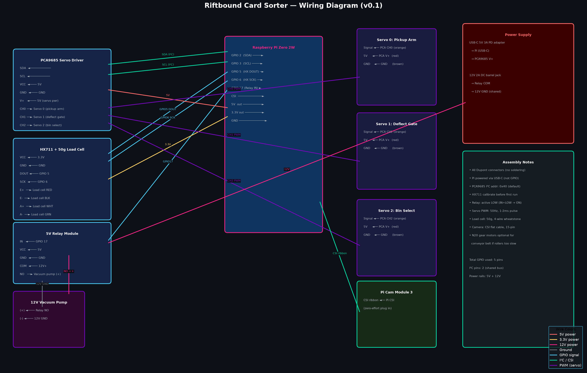
Full wiring overview
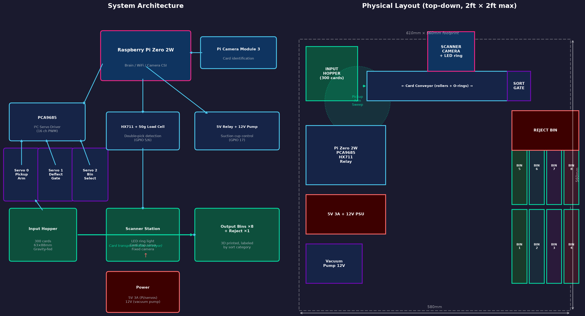
System architecture
PCA9685 — Servo Driver (I²C)
Pi Pin
Signal
Wire
PCA9685 Pin
Pin 1
3.3V
Red
VCC
Pin 6
GND
Black
GND
Pin 3 (GPIO 2)
SDA1
Blue
SDA
Pin 5 (GPIO 3)
SCL1
Yellow
SCL
5V Rail
Servo Power
Red
V+ (servo rail)
HX711 — Load Cell Amplifier
Pi Pin
Signal
Wire
HX711 Pin
Pin 1
3.3V
Red
VCC
Pin 9
GND
Black
GND
Pin 29 (GPIO 5)
DT (data)
Green
DT
Pin 31 (GPIO 6)
SCK (clock)
Yellow
SCK
Load Cell 4-Wire (to HX711)
Wire Color
Load Cell Terminal
HX711 Pin
Red
E+ (excitation +)
E+
Black
E– (excitation –)
E–
White
A+ (signal +)
A+
Green
A– (signal –)
A–
Step 1 — Wire PCA9685. Connect the 4 I²C wires per table above. Connect 5V rail to PCA9685 V+ for servo power — never use the Pi's 5V pin for servos (overcurrent risk).
Step 2 — Wire HX711. Clamp or solder the load cell wires to HX711 E+/E–/A+/A– terminals. Run the cable through the electronics tray channel before mounting.
Step 3 — Verify I²C after first boot. SSH into the Pi and run: i2cdetect -y 1. You should see address 0x40 for the PCA9685.
Tip — CSI Ribbon (Camera). Lift the CSI connector latch on the Pi Zero. Insert ribbon with metal contacts facing away from the latch. Press latch down firmly. Route through camera bracket slot before attaching module.
Stage 4
Relay + Motors
Wire the vacuum pump relay and N20 conveyor motors via L9110S driver.
5V Relay Module — Vacuum Pump Switch
Pi Pin
Signal
Relay Pin
Pin 4
5V (coil power)
VCC
Pin 6
GND
GND
Pin 11 (GPIO 17)
Relay trigger
IN
12V Rail
Pump power source
COM
Relay NO
→ Pump + terminal
NO
L9110S Dual H-Bridge — N20 Conveyor Motors
Pi Pin
GPIO
L9110S Pin
Function
5V Rail
—
VCC
Motor power (5–6V)
GND
—
GND
Common ground
Pin 33
GPIO 13
A-IA
Motor A forward (PWM)
Pin 35
GPIO 19
A-IB
Motor A reverse (PWM)
Pin 37
GPIO 26
B-IA
Motor B forward (PWM)
Pin 38
GPIO 20
B-IB
Motor B reverse (PWM)
OA1 / OA2
—
Output A
N20 Motor A terminals
OB1 / OB2
—
Output B
N20 Motor B terminals
Step 1 — Relay wiring. Wire per table above. Use the Normally Open (NO) terminal so the pump is off when Pi GPIO 17 is LOW. The relay LED should illuminate when you trigger GPIO 17 high.
Step 2 — Pump wire routing. Twist the two 12V pump wires together and route them away from I²C/signal wires. 12V switching creates noise that can corrupt sensor readings.
Step 3 — L9110S motor wiring. Connect N20 Motor A to OA1/OA2, Motor B to OB1/OB2. Motor polarity determines direction — if conveyor runs backwards, swap the two output wires for that motor.
Step 4 — Test motor direction before assembly. With soft code, briefly run GPIO 13 high. Motor A should run forward (feeding cards toward scanner). Confirm before mounting to rails.
Stage 5
Servo Wiring
Connect all 3× MG996R servos to PCA9685 channels. Camera CSI ribbon connects directly to Pi.
ℹ️
All servo power (5V+, GND) comes from the PCA9685 V+ rail — never from Pi GPIO pins. The Pi only provides the signal wire via PCA9685 channels.
PCA9685 Channel
Servo Function
Wire Colors (3-pin)
Ch 0
Suction arm — shoulder
Brown/GNDRed/5VOrange/Signal
Ch 1
Suction arm — elbow
Brown/GNDRed/5VOrange/Signal
Ch 2
Suction arm — wrist / Z
Brown/GNDRed/5VOrange/Signal
Ch 3
Hopper gate
Brown/GNDRed/5VOrange/Signal
Ch 4
Bin select gate (if used)
Brown/GNDRed/5VOrange/Signal
Step 1 — Plug servos into PCA9685. Each servo connector is 3-pin: GND (brown/black), 5V (red), signal (orange/yellow/white). The signal wire plugs into the innermost pin row on PCA9685 (labeled S).
Step 2 — Set servos to 90° center before mounting. Power up and briefly run code to send 90° to all channels. Attach servo horns while servos are centered — this ensures the full range of motion is usable in both directions.
Step 3 — Don't exceed current limit. MG996R draws up to 2.5A stall. Ensure your 5V rail (LM2596 rated 3A) can supply all servos. Avoid stalling multiple servos simultaneously.
Step 4 — Camera CSI ribbon. On Pi Zero 2W, the CSI connector is between the micro-USB ports. Lift the plastic latch. Insert ribbon with metal contacts facing the board (away from latch). Lock the latch down firmly.
Step 5 — Verify config.yaml channel mapping. Open config.yaml and confirm each servo's channel number matches the physical connection before first full power-on.
Stage 6
Mechanical Assembly
Build in this order to avoid back-tracking. Each step depends on the previous.
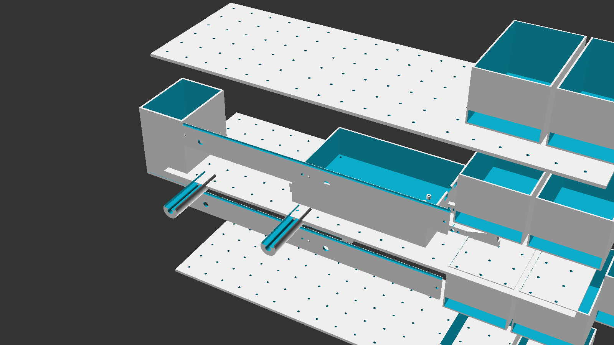
Isometric overview
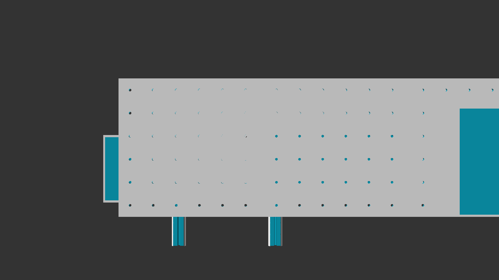
Top view
Step 1 — Baseplate. Lay out all baseplate tiles on a flat surface and click/bolt them together. Fasten to a flat backing board (MDF or acrylic) with M3 × 8mm screws from below.
Flatness check: place a ruler across tiles. Any gap >0.5mm will cause card misfeeds.
⚠️
Additional item needed: MDF or acrylic backing board — not included in original order. Required to mount and stiffen the joined baseplate tiles. Cut to match the assembled tile footprint.
Step 2 — Electronics Tray. Snap the electronics tray into the baseplate cutout. Mount components using M2.5 standoffs (use standoffs for serviceability, not hot glue):
Raspberry Pi Zero 2W
PCA9685
HX711
L9110S
Relay module
LM2596 buck converter
Route all power wires along tray channels before connecting. Leave signal wires loose until rails are in place.
⚠️
Additional item needed: M2.5 standoffs (for electronics tray) — not included in original order. Required to mount all circuit boards to the tray with proper clearance for serviceability.
⚠️
Additional item needed: Micro-USB cable for Pi power (must support 3A) — not included in original order. Required to power the Pi Zero 2W from the 5V rail. Standard charge-only cables are insufficient.
Step 3 — Conveyor Rails. Insert N20 motors into motor mounts. Slot each mount into conveyor rails. Clip rails onto baseplate guide pins — should click firmly with no rocking.
Thread the conveyor belt over motor pulleys and idler rollers. Tension by sliding idler until belt deflects ~2mm under light finger pressure. Secure motor mount screws (M3 × 10mm).
⚠️
Additional item needed: Conveyor belt or timing belt — not included in original order and not in the 3D-printed parts list. Required to link the N20 motor drive pulleys to the idler rollers. Match belt pitch to your pulleys.
Step 4 — Hopper. Slide hopper body onto the inlet end of conveyor rails until locating tabs engage. Insert hopper gate servo (Ch 3) into its slot. Attach servo horn to gate arm.
Set servo to 90° center before fixing horn — gate is half-open at rest.
Step 5 — Suction Arm. Press shoulder servo into arm base; secure with M2 × 8mm screws. Attach elbow servo, routing cable through arm channel. Attach wrist servo; press-fit suction cup mount.
Connect silicone tubing from vacuum pump through arm channel to suction cup. Mount completed arm onto baseplate arm post using M3 × 16mm bolts. Plug servos: shoulder → Ch0, elbow → Ch1, wrist → Ch2.
⚠️
Additional item needed: M2 × 8mm screws (for shoulder servo in suction arm base) — not included in original order. The M3 assorted kit does not include M2 screws. Required to secure the shoulder servo inside the arm base.
Step 6 — Scanner Hood. Position hood over scanning zone. Mount camera bracket inside top cutout; secure with M2.5 screws. Route CSI ribbon through rear cable slot. Attach camera module; lock ribbon latch.
Clip hood onto baseplate posts — should be removable for cleaning without tools.
⚠️
Additional item needed: M2.5 screws (for camera bracket inside scanner hood) — not included in original order. Required to fasten the camera bracket to the hood's top cutout. The M3 assorted kit does not cover M2.5.
Step 7 — Load Cell + Weigh Platform. Mount load cell between lower plate and upper weigh platform using M3 bolts. Torque to hand-tight + ¼ turn only — overtightening corrupts readings.
Seat weigh platform in designated tray cutout so cards land flat. Route load cell cable to HX711.
Step 8 — Bins. Snap each bin body into its row slot on the baseplate. Connect bin gate servo horn links if used. Confirm each bin removes individually without lifting the full assembly.
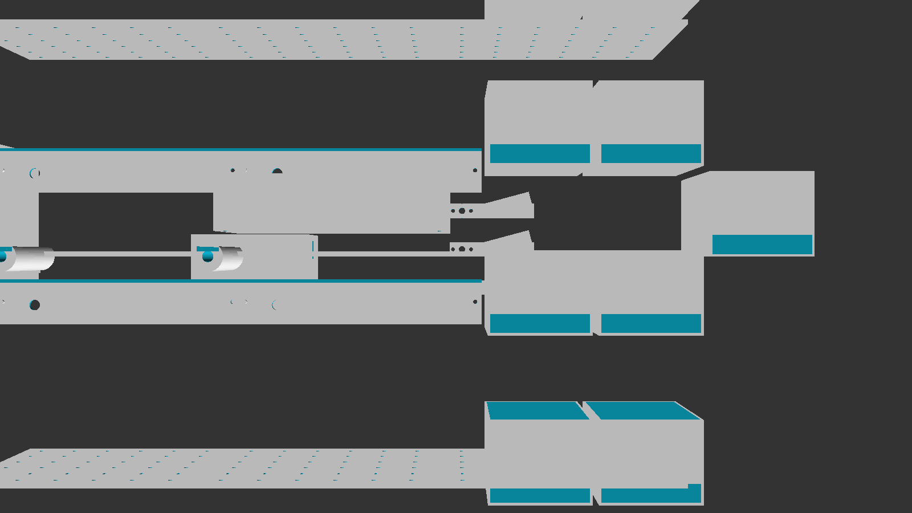
Front
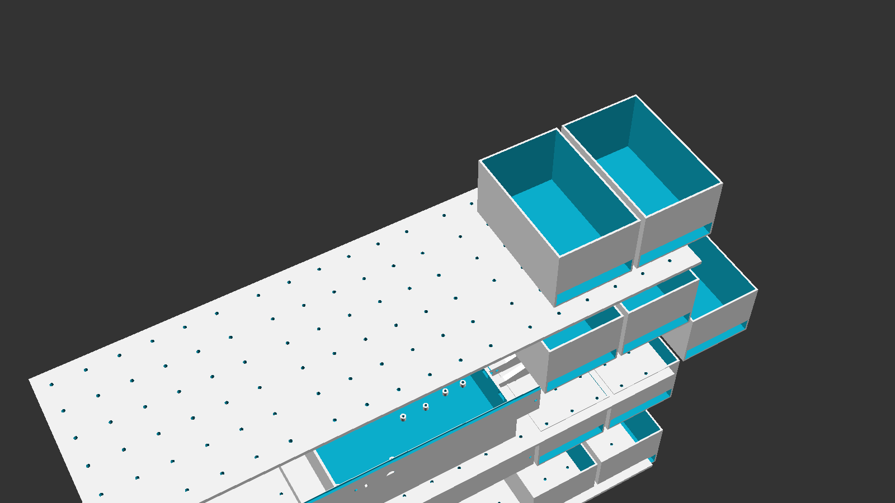
Back isometric
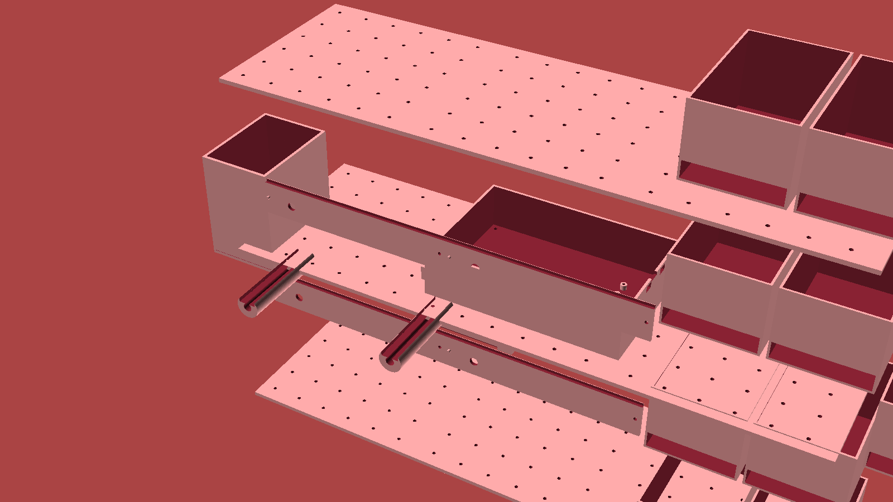
Full assembly
Stage 7
Software Setup
Flash Pi OS, run the setup script, build the card database, and do initial hardware calibration.
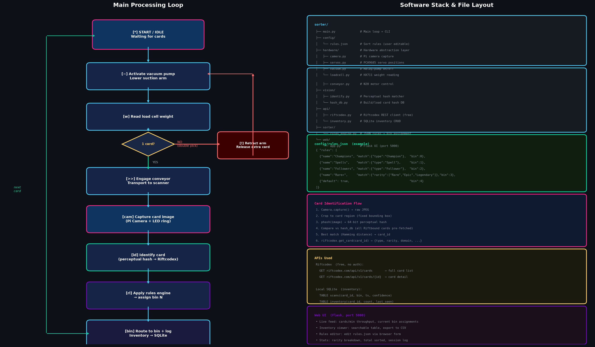
Software stack
System architecture
7a. Flash Pi OS
Download Pi OS Lite (64-bit). Use Raspberry Pi Imager from raspberrypi.com/software. Select "Raspberry Pi OS Lite (64-bit)" for Pi Zero 2W.
Configure before flashing (Imager gear icon → Advanced):
Enable SSH
Hostname: riftbound.local
Username + password of your choice
Wi-Fi SSID + password (or leave for Ethernet)
Flash to 32GB micro SD. Insert SD into Pi. Power on. SSH in: ssh <user>@riftbound.local
setup.sh installs: system packages (python3, libcamera, i2c-tools), enables I²C/SPI/Camera via raspi-config, creates Python venv + requirements.txt, installs systemd service riftbound.service, copies config.yaml.example.
7c. Build Card Database
cd ~/riftbound-sorter
python main.py --build-db
# Downloads card image data, builds local SQLite DB
# Requires internet. Runtime: 5–15 min depending on set size.
7d. Initial Hardware Calibration
python main.py --calibrate
# Interactive wizard covers:
# · Load cell zero (tare with empty platform)
# · Servo angle limits for each axis
# · Conveyor speed (cards per minute)
# · Camera exposure/white balance lock
7e. Camera Calibration
venv/bin/python scripts/calibrate_camera.py --no-mock# Print the checkerboard sheet, hold in scanner zone
# Follow on-screen prompts
# Produces: camera_calibration.npz
7f. Verify Service
sudo systemctl status riftbound.service
# Should show: active (running)
# Web UI accessible at: http://riftbound.local:5000
Stage 8
Calibration Checklist
Complete after first assembly and again after any mechanical change. Check items off as you go — progress is saved in your browser.
0%
of calibration steps complete
Load Cell Zero
⚠️
Additional item needed: Known calibration mass (100g recommended) — not included in original order. Required to verify load cell accuracy. Note: the ordered HX711 + 50g load cell kit has a 50g rated range; the 100g calibration mass exceeds it. Confirm your load cell range before ordering the mass.